pacman::p_load(sf, spatstat, tmap, tidyverse, rvest)02b - Second Order Spatial Point Patterns Analysis Methods
Overview
Second-order spatial point pattern analysis Second-order spatial point pattern analysis examines the spatial relationships between points in a pattern, specifically focusing on how the presence of one point influences the location of others. It goes beyond simply describing the overall density of points (first-order effects) by investigating clustering, dispersion, or randomness at various spatial scales.
1 Getting started
Using appropriate functions of spatstat, in this hands-on exercise we aim to discover the spatial point processes of childecare centres in Singapore.
The specific questions we would like to answer are as follows:
- are the childcare centres in Singapore randomly distributed throughout the country?
- if the answer is not, then the next logical question is where are the locations with higher concentration of childcare centres?
2 The data
We will use two data sets for the analysis.
Child Care Services data from data.gov.sg, a point feature data providing both location and attribute information of childcare centres.
Master Plan 2019 Subzone Boundary (No Sea), a polygon feature data providing information of URA 2019 Master Plan Planning Subzone boundary data.
Both data sets are available at Singapore’s open data portal. They are provided in kml and geojson format.
3 Installing and Loading the R packages
| R Package | Description |
|---|---|
| sf | a relatively new R package specially designed to import, manage and process vector-based geospatial data in R. |
| spatstat | has a wide range of useful functions for point pattern analysis. In this hands-on exercise, it will be used to perform 1st- and 2nd-order spatial point patterns analysis and derive kernel density estimation (KDE) layer. |
| tmap | provides functions for plotting cartographic quality static point patterns maps or interactive maps by using leaflet API. |
| tidyverse | a family of R packages designed for modern data science. These packages are developed to work together seamlessly, sharing a common design philosophy, grammar, and data structures, which aims to make data manipulation, analysis, and visualization in R more intuitive and efficient. |
| rvest | for scraping (or harvesting) data from web pages *need this to read html. |
4 Data Import and Preparation
The processes of importing and preparing the geospatial data to meet the analysis are similar to Exercise 02a.
- Importing and Wrangling Geospatial Data Sets
- Geospatial Data wrangling - to prepare geospatial data in ppp object class required by spatstat package.
Show code for data wranggling
mpsz_sf <- st_read("data/MasterPlan2019SubzoneBoundaryNoSeaKML.kml") %>%
st_zm(drop = TRUE, what = "ZM") %>%
st_transform(crs = 3414)Reading layer `URA_MP19_SUBZONE_NO_SEA_PL' from data source
`/Users/cathyc/Documents/cathyschu/ISSS626GEO/Hands-on_Ex/Hands-on_Ex02/data/MasterPlan2019SubzoneBoundaryNoSeaKML.kml'
using driver `KML'
Simple feature collection with 332 features and 2 fields
Geometry type: MULTIPOLYGON
Dimension: XY, XYZ
Bounding box: xmin: 103.6057 ymin: 1.158699 xmax: 104.0885 ymax: 1.470775
z_range: zmin: 0 zmax: 0
Geodetic CRS: WGS 84Show code for data wranggling
extract_kml_field <- function(html_text, field_name) {
if (is.na(html_text) || html_text == "") return(NA_character_)
page <- read_html(html_text)
rows <- page %>% html_elements("tr")
value <- rows %>%
keep(~ html_text2(html_element(.x, "th")) == field_name) %>%
html_element("td") %>%
html_text2()
if (length(value) == 0) NA_character_ else value
}
mpsz_sf <- mpsz_sf %>%
mutate(
REGION_N = map_chr(Description, extract_kml_field, "REGION_N"),
PLN_AREA_N = map_chr(Description, extract_kml_field, "PLN_AREA_N"),
SUBZONE_N = map_chr(Description, extract_kml_field, "SUBZONE_N"),
SUBZONE_C = map_chr(Description, extract_kml_field, "SUBZONE_C")
) %>%
select(-Name, -Description) %>%
relocate(geometry, .after = last_col())
mpsz_cl <- mpsz_sf %>%
filter(SUBZONE_N != "SOUTHERN GROUP",
PLN_AREA_N != "WESTERN ISLANDS",
PLN_AREA_N != "NORTH-EASTERN ISLANDS")
childcare_sf <- st_read("data/ChildCareServices.kml") %>%
st_zm(drop = TRUE, what = "ZM") %>%
st_transform(crs = 3414)Reading layer `CHILDCARE' from data source
`/Users/cathyc/Documents/cathyschu/ISSS626GEO/Hands-on_Ex/Hands-on_Ex02/data/ChildCareServices.kml'
using driver `KML'
Simple feature collection with 1925 features and 2 fields
Geometry type: POINT
Dimension: XYZ
Bounding box: xmin: 103.6878 ymin: 1.247759 xmax: 103.9897 ymax: 1.462134
z_range: zmin: 0 zmax: 0
Geodetic CRS: WGS 84Show code for ppp conversion
#convert to ppp
childcare_ppp <- as.ppp(childcare_sf)
#create owin object
sg_owin <- as.owin(mpsz_cl)
#combien point events object and owin object
childcareSG_ppp = childcare_ppp[sg_owin]
#extract study areas
pg <- mpsz_cl %>%
filter(PLN_AREA_N == "PUNGGOL")
tm <- mpsz_cl %>%
filter(PLN_AREA_N == "TAMPINES")
ck <- mpsz_cl %>%
filter(PLN_AREA_N == "CHOA CHU KANG")
jw <- mpsz_cl %>%
filter(PLN_AREA_N == "JURONG WEST")Show code for plotting
#create owin object
pg_owin = as.owin(pg)
tm_owin = as.owin(tm)
ck_owin = as.owin(ck)
jw_owin = as.owin(jw)
#combine point events object and owin object
childcare_pg_ppp = childcare_ppp[pg_owin]
childcare_tm_ppp = childcare_ppp[tm_owin]
childcare_ck_ppp = childcare_ppp[ck_owin]
childcare_jw_ppp = childcare_ppp[jw_owin]
#transform measurement to km
childcare_pg_ppp.km = rescale.ppp(childcare_pg_ppp, 1000, "km")
childcare_tm_ppp.km = rescale.ppp(childcare_tm_ppp, 1000, "km")
childcare_ck_ppp.km = rescale.ppp(childcare_ck_ppp, 1000, "km")
childcare_jw_ppp.km = rescale.ppp(childcare_jw_ppp, 1000, "km")
#plot
par(bg = "#e6f0e6", mfrow = c(2,2), mar = c(1, 1, 2, 1))
plot(unmark(childcare_pg_ppp.km), main = "Punggol")
plot(unmark(childcare_tm_ppp.km), main = "Tampines")
plot(unmark(childcare_ck_ppp.km), main = "Choa Chu Kang")
plot(unmark(childcare_jw_ppp.km), main = "Jurong West")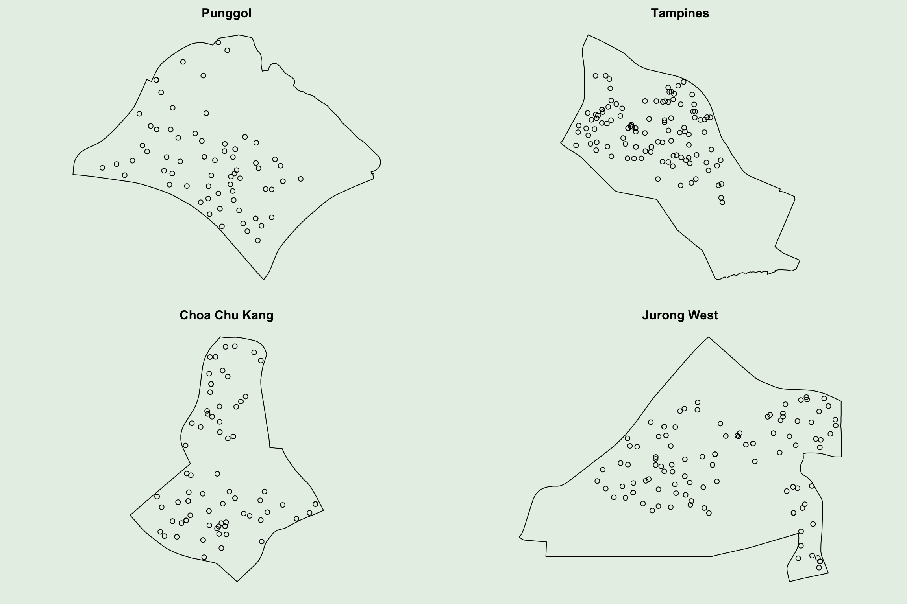
6 Analysing Spatial Point Process Using G-Function
The G function measures the distribution of the distances from an arbitrary event to its nearest event. In this section, we will compute G-function estimation by using Gest() of spatstat package. We will also perform Monte Carlo simulation test using envelope() of spatstat package.
6.1.1 Computing G-function estimation
set.seed(1234)Compute G-function using Gest() of spatstat package.
par(bg = "#EEEEEE")
G_CK = Gest(childcare_ck_ppp, correction = "border")
plot(G_CK, xlim = c(0,500))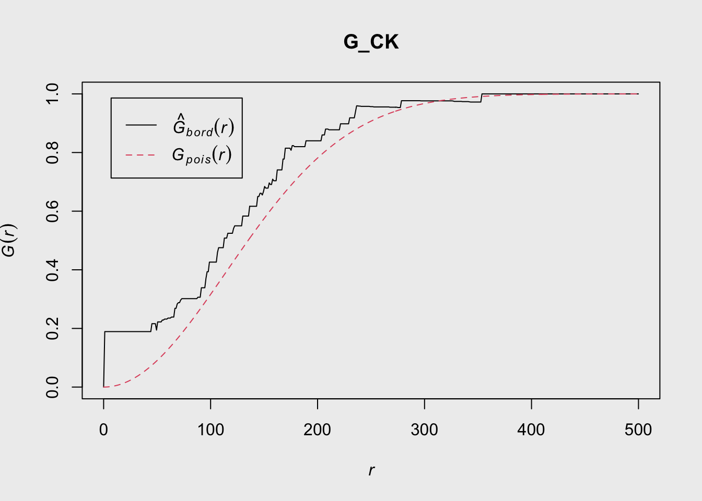
6.1.2 Performing Complete Spatial Randomness Test
To confirm the observed spatial patterns above, a hypothesis test will be conducted. The hypothesis and test are as follows:
H₀ = The distribution of childcare services at Choa Chu Kang are randomly distributed.
H₁ = The distribution of childcare services at Choa Chu Kang are not randomly distributed.
The null hypothesis will be rejected if p-value is smaller than alpha value of 0.001.
Monte Carlo test with G-fucntion.
par(bg = "#EEEEEE")
G_CK.csr <- envelope(childcare_ck_ppp, Gest, nsim = 999)Generating 999 simulations of CSR ...
1, 2, 3, ......10.........20.........30.........40.........50.........60..
.......70.........80.........90.........100.........110.........120.........130
.........140.........150.........160.........170.........180.........190........
.200.........210.........220.........230.........240.........250.........260......
...270.........280.........290.........300.........310.........320.........330....
.....340.........350.........360.........370.........380.........390.........400..
.......410.........420.........430.........440.........450.........460.........470
.........480.........490.........500.........510.........520.........530........
.540.........550.........560.........570.........580.........590.........600......
...610.........620.........630.........640.........650.........660.........670....
.....680.........690.........700.........710.........720.........730.........740..
.......750.........760.........770.........780.........790.........800.........810
.........820.........830.........840.........850.........860.........870........
.880.........890.........900.........910.........920.........930.........940......
...950.........960.........970.........980.........990........
999.
Done.Let’s plot the model output.
par(bg = "#EEEEEE")
plot(G_CK.csr)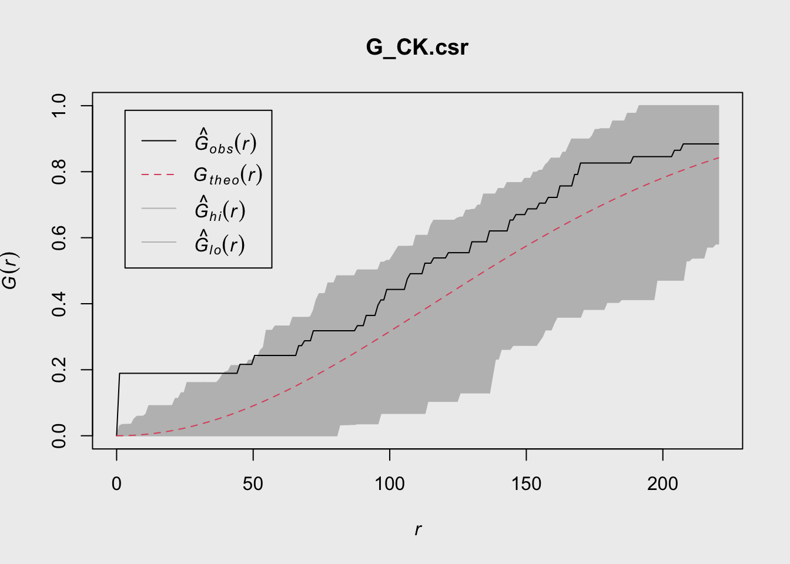
Result
At the α = 0.001 significance level, there is statistically significant evidence to reject the null hypothesis. We conclude that childcare services in Choa Chu Kang are not randomly distributed.
Since G(r) is below the expected curve, it’s lower probability of finding nearest neighbors at short distances. Specifically, the facilities exhibit a dispersed spatial pattern, where they are more evenly spaced than would occur by random chance alone.
6.2.1 Computing G-function estimation
par(bg = "#EEEEEE")
G_TM = Gest(childcare_tm_ppp, correction = "best")
plot(G_TM)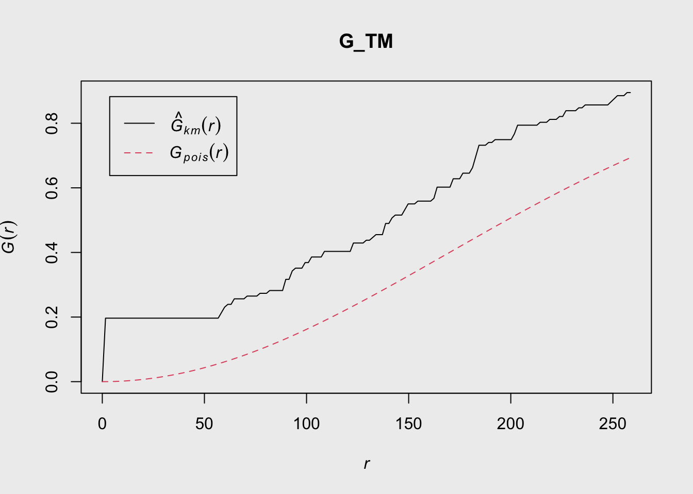
6.2.2 Performing Complete Spatial Randomness Test
To confirm the observed spatial patterns above, a hypothesis test will be conducted. The hypothesis and test are as follows:
H₀ = The distribution of childcare services at Tampines are randomly distributed.
H₁ = The distribution of childcare services at Tampines are not randomly distributed.
The null hypothesis will be rejected is p-value is smaller than alpha value of 0.001.
G_TM.csr <- envelope(childcare_tm_ppp, Gest, correction = "all", nsim = 999)Generating 999 simulations of CSR ...
1, 2, 3, ......10.........20.........30.........40.........50.........60..
.......70.........80.........90.........100.........110.........120.........130
.........140.........150.........160.........170.........180.........190........
.200.........210.........220.........230.........240.........250.........260......
...270.........280.........290.........300.........310.........320.........330....
.....340.........350.........360.........370.........380.........390.........400..
.......410.........420.........430.........440.........450.........460.........470
.........480.........490.........500.........510.........520.........530........
.540.........550.........560.........570.........580.........590.........600......
...610.........620.........630.........640.........650.........660.........670....
.....680.........690.........700.........710.........720.........730.........740..
.......750.........760.........770.........780.........790.........800.........810
.........820.........830.........840.........850.........860.........870........
.880.........890.........900.........910.........920.........930.........940......
...950.........960.........970.........980.........990........
999.
Done.Let’s plot the model output:
par(bg = "#EEEEEE")
plot(G_TM.csr)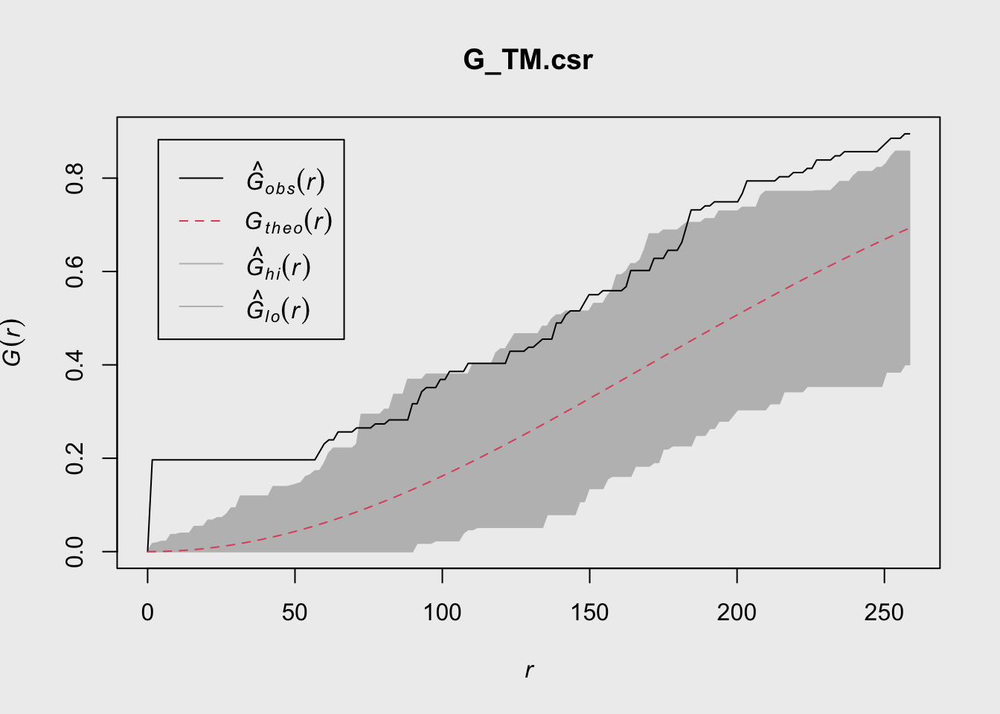
Note
Observed G(r) < Expected G(r) → Nearest neighbors are farther away → Regular pattern
Observed G(r) > Expected G(r) → Nearest neighbors are closer → Clustered pattern
7 Analysing Spatial Point Process Using F-Function
The F function estimates the empty space function F(r) or its hazard rate h(r) from a point pattern in a window of arbitrary shape. We will compute F-function estimation by using Fest() of spatstat package. We will also perform Monte Carlo simulation test using envelope() of spatstat package.
7.1.1 Computing F-function estimation
Below is to compute F-function using Fest() of spatat package.
par(bg = "#EEEEEE")
F_CK = Fest(childcare_ck_ppp)
plot(F_CK)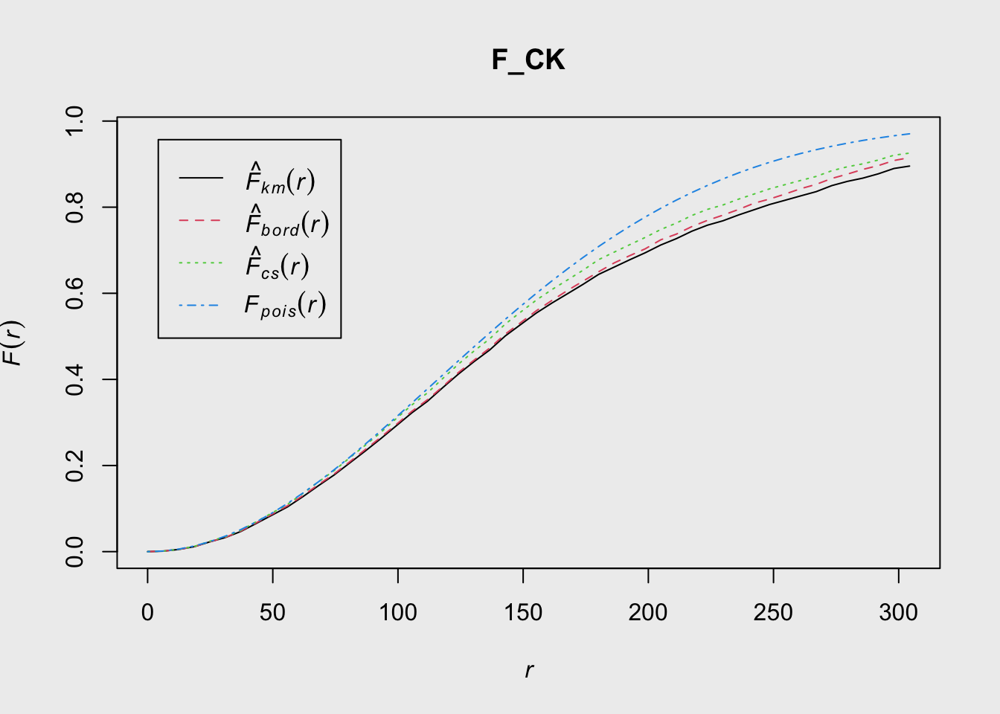
7.1.2 Performing Complete Spatial Randomness Test
To confirm the observed spatial patterns above, a hypothesis test will be conducted. The hypothesis and test are as follows:
H₀ = The distribution of childcare services at Choa Chu Kang are randomly distributed.
H₁ = The distribution of childcare services at Choa Chu Kang are not randomly distributed.
The null hypothesis will be rejected if p-value is smaller than alpha value of 0.001.
Monte Carlo test with F-fucntion.
F_CK.csr <- envelope(childcare_ck_ppp, Fest, nsim = 999)Generating 999 simulations of CSR ...
1, 2, 3, ......10.........20.........30.........40.........50.........60..
.......70.........80.........90.........100.........110.........120.........130
.........140.........150.........160.........170.........180.........190........
.200.........210.........220.........230.........240.........250.........260......
...270.........280.........290.........300.........310.........320.........330....
.....340.........350.........360.........370.........380.........390.........400..
.......410.........420.........430.........440.........450.........460.........470
.........480.........490.........500.........510.........520.........530........
.540.........550.........560.........570.........580.........590.........600......
...610.........620.........630.........640.........650.........660.........670....
.....680.........690.........700.........710.........720.........730.........740..
.......750.........760.........770.........780.........790.........800.........810
.........820.........830.........840.........850.........860.........870........
.880.........890.........900.........910.........920.........930.........940......
...950.........960.........970.........980.........990........
999.
Done.Let’s plot the model output:
par(bg = "#EEEEEE")
plot(F_CK.csr)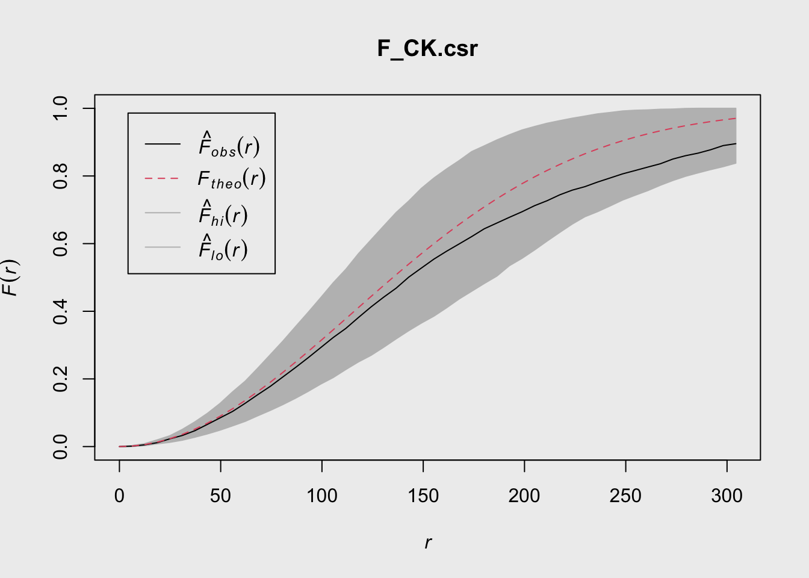
7.2.1 Computing F-function estimation
To compute F-function for Tampines planning area.
par(bg = "#EEEEEE")
F_TM = Fest(childcare_tm_ppp, correction = "best")
plot(F_TM)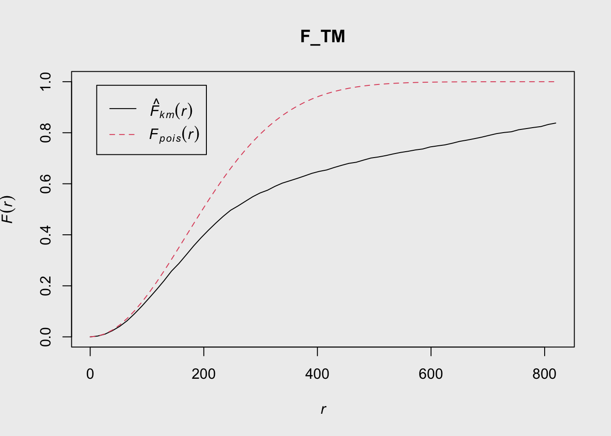
7.2.2 Performing Complete Spatial Randomness Test
To confirm the observed spatial patterns above, a hypothesis test will be conducted. The hypothesis and test are as follows:
H₀ = The distribution of childcare services at Tampines are randomly distributed. H₁ = The distribution of childcare services at Tampines are not randomly distributed. The null hypothesis will be rejected if p-value is smaller than alpha value of 0.001.
F_TM.csr <- envelope(childcare_tm_ppp, Fest, correction = "all", nsim = 999)Generating 999 simulations of CSR ...
1, 2, 3, ......10.........20.........30.........40.........50.........60..
.......70.........80.........90.........100.........110.........120.........130
.........140.........150.........160.........170.........180.........190........
.200.........210.........220.........230.........240.........250.........260......
...270.........280.........290.........300.........310.........320.........330....
.....340.........350.........360.........370.........380.........390.........400..
.......410.........420.........430.........440.........450.........460.........470
.........480.........490.........500.........510.........520.........530........
.540.........550.........560.........570.........580.........590.........600......
...610.........620.........630.........640.........650.........660.........670....
.....680.........690.........700.........710.........720.........730.........740..
.......750.........760.........770.........780.........790.........800.........810
.........820.........830.........840.........850.........860.........870........
.880.........890.........900.........910.........920.........930.........940......
...950.........960.........970.........980.........990........
999.
Done.Plot the model output:
par(bg = "#EEEEEE")
plot(F_TM.csr)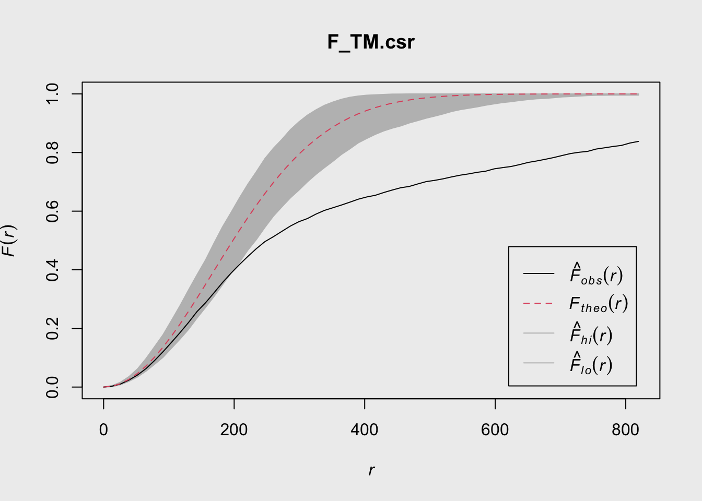
8 Analysing Spatial Point Process Using K-Function
K-function measures the number of events found up to a given distance of any particular event. In this section, we will compute K-function estimates by using Kest() of spatstat package. We will also perform Monte Carlo simulation test using envelope() of spatstat package.
8.1.1 Computing K-fucntion estimate
par(bg = "#EEEEEE")
K_CK = Kest(childcare_ck_ppp, correction = "Ripley")
plot(K_CK, . - r ~ r, ylab = "K(d)-r", xlab = "d(m)")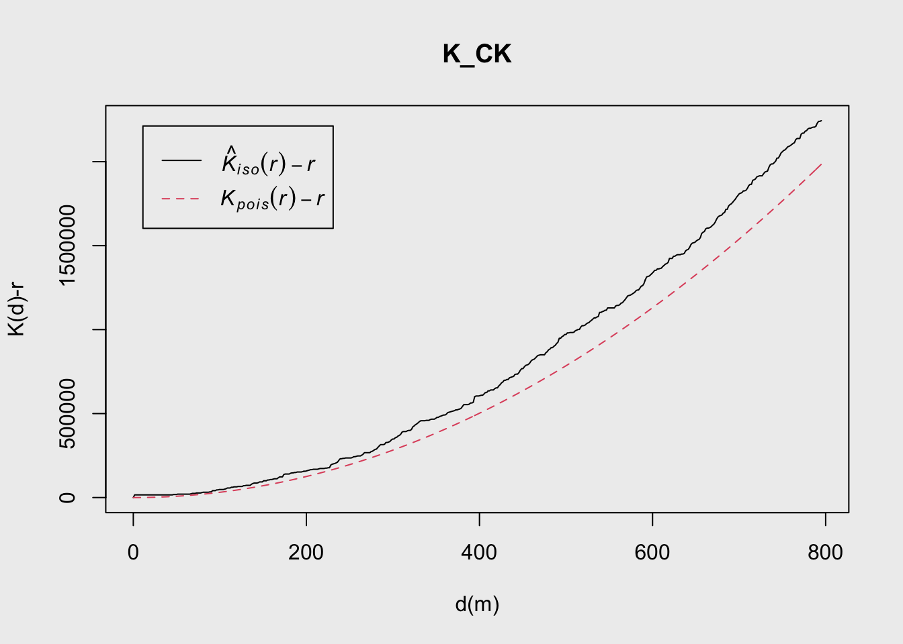
8.1.2 Performing Complete Spatial Randomness Test
To confirm the observed spatial patterns above, a hypothesis test will be conducted. The hypothesis and test are as follows:
H₀ = The distribution of childcare services at Choa Chu Kang are randomly distributed.
H₁ = The distribution of childcare services at Choa Chu Kang are not randomly distributed.
The null hypothesis will be rejected if p-value is smaller than alpha value of 0.001.
par(bg = "#EEEEEE")
K_ck.csr <- envelope(childcare_ck_ppp, Kest, nsim = 99, rank = 1, glocal=TRUE)Generating 99 simulations of CSR ...
1, 2, 3, 4, 5, 6, 7, 8, 9, 10, 11, 12, 13, 14, 15, 16, 17, 18, 19, 20,
21, 22, 23, 24, 25, 26, 27, 28, 29, 30, 31, 32, 33, 34, 35, 36, 37, 38, 39, 40,
41, 42, 43, 44, 45, 46, 47, 48, 49, 50, 51, 52, 53, 54, 55, 56, 57, 58, 59, 60,
61, 62, 63, 64, 65, 66, 67, 68, 69, 70, 71, 72, 73, 74, 75, 76, 77, 78, 79, 80,
81, 82, 83, 84, 85, 86, 87, 88, 89, 90, 91, 92, 93, 94, 95, 96, 97, 98,
99.
Done.Let’s plot the model output:
par(bg = "#EEEEEE")
plot(K_ck.csr, . - r ~ r, xlab="d", ylab="K(d)-r")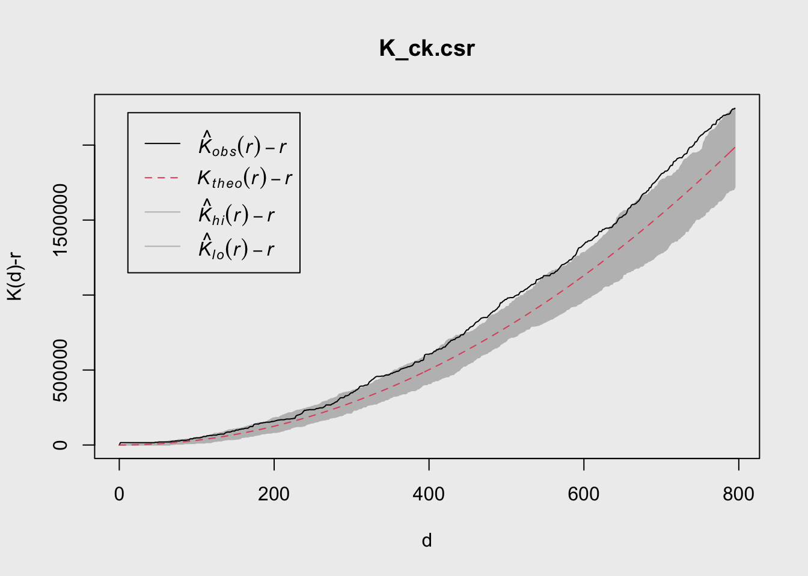
Result
The Monte Carlo envelope test with 99 simulations shows that there is insufficient statistical evidence to conclude that the distribution of childcare services in Choa Chu Kang differs from random distribution at the 0.001 significance level.
The random distribution pattern in Choa Chu Kang suggests that childcare facilities are well-distributed across the area without significant clustering or regularity.
8.2.1 Computing K-fucntion estimation
par(bg = "#EEEEEE")
K_tm = Kest(childcare_tm_ppp, correction = "Ripley")
plot(K_tm, . -r ~ r,
ylab= "K(d)-r", xlab = "d(m)",
xlim=c(0,1000))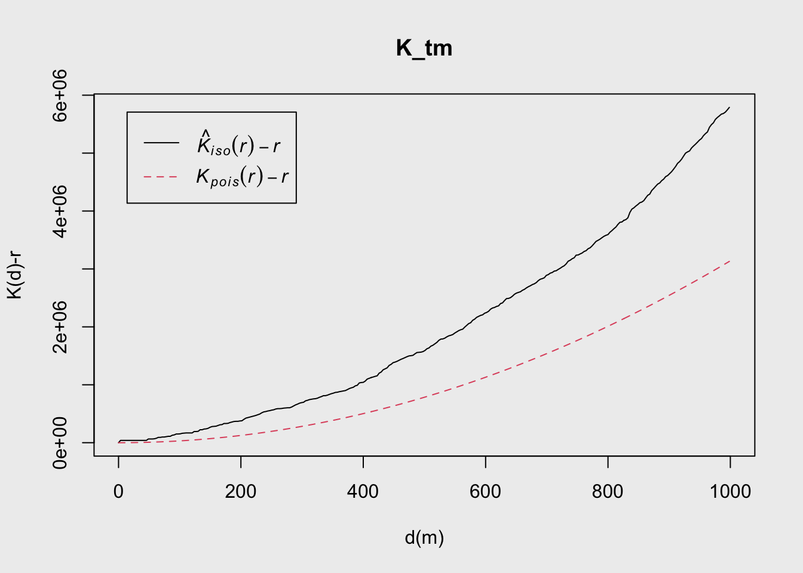
8.2.2 Performing Complete Spatial Randomness Test
To confirm the observed spatial patterns above, a hypothesis test will be conducted. The hypothesis and test are as follows:
H₀ = The distribution of childcare services at Tampines are randomly distributed.
H₁ = The distribution of childcare services at Tampines are not randomly distributed. The null hypothesis will be rejected if p-value is smaller than alpha value of 0.001.
K_tm.csr <- envelope(childcare_tm_ppp, Kest, nsim = 99, rank = 1, glocal=TRUE)Generating 99 simulations of CSR ...
1, 2, 3, 4, 5, 6, 7, 8, 9, 10, 11, 12, 13, 14, 15, 16, 17, 18, 19, 20,
21, 22, 23, 24, 25, 26, 27, 28, 29, 30, 31, 32, 33, 34, 35, 36, 37, 38, 39, 40,
41, 42, 43, 44, 45, 46, 47, 48, 49, 50, 51, 52, 53, 54, 55, 56, 57, 58, 59, 60,
61, 62, 63, 64, 65, 66, 67, 68, 69, 70, 71, 72, 73, 74, 75, 76, 77, 78, 79, 80,
81, 82, 83, 84, 85, 86, 87, 88, 89, 90, 91, 92, 93, 94, 95, 96, 97, 98,
99.
Done.Let’s plot the model output:
par(bg = "#EEEEEE")
plot(K_tm.csr, . - r ~ r,
xlab="d", ylab="K(d)-r", xlim=c(0,500))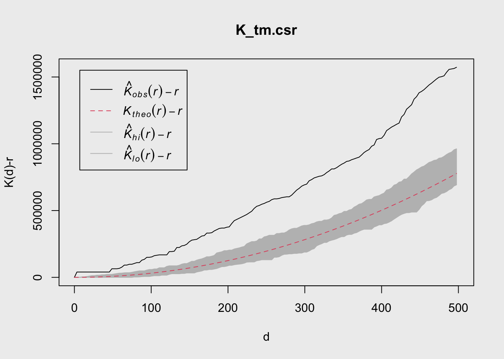
Result
At the α = 0.001 significance level, there is statistically significant evidence to reject the null hypothesis. We conclude that childcare services in Tampines are not randomly distributed - they exhibit significant spatial clustering.
The observed pattern is consistently above the envelope across all distances. In addition, the deviation from randomness is substantial (not just marginally significant).
9 Analysing Spatial Point Process Using L-Function
In this section, we will compute L-function estimation by using Lest() of spatstat package. We will also perform Monte Carlo simulation test using envelope() of spatstat package.
9.1.1 Computing L Fucntion estimation
par(bg = "#EEEEEE")
L_CK = Lest(childcare_ck_ppp, correction = "Ripley")
plot(L_CK, . - r ~ r,
ylab = "L(d)-r", xlab = "d(m)")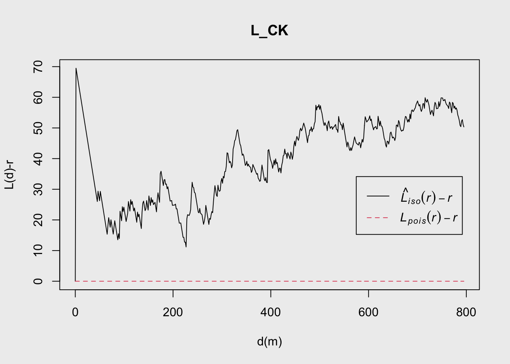
9.1.2 Performing Complete Spatial Randomness Test
To confirm the observed spatial patterns above, a hypothesis test will be conducted. The hypothesis and test are as follows:
H₀ = The distribution of childcare services at Choa Chu Kang are randomly distributed.
H₁ = The distribution of childcare services at Choa Chu Kang are not randomly distributed.
The null hypothesis will be rejected if p-value is smaller than alpha value of 0.001.
L_CK.csr <- envelope(childcare_ck_ppp, Lest, nsim = 99, rank = 1, glocal=TRUE)Generating 99 simulations of CSR ...
1, 2, 3, 4, 5, 6, 7, 8, 9, 10, 11, 12, 13, 14, 15, 16, 17, 18, 19, 20,
21, 22, 23, 24, 25, 26, 27, 28, 29, 30, 31, 32, 33, 34, 35, 36, 37, 38, 39, 40,
41, 42, 43, 44, 45, 46, 47, 48, 49, 50, 51, 52, 53, 54, 55, 56, 57, 58, 59, 60,
61, 62, 63, 64, 65, 66, 67, 68, 69, 70, 71, 72, 73, 74, 75, 76, 77, 78, 79, 80,
81, 82, 83, 84, 85, 86, 87, 88, 89, 90, 91, 92, 93, 94, 95, 96, 97, 98,
99.
Done.Let’s plot the model output:
par(bg = "#EEEEEE")
plot(L_CK.csr, . - r ~ r, xlab="d", ylab="L(d)-r")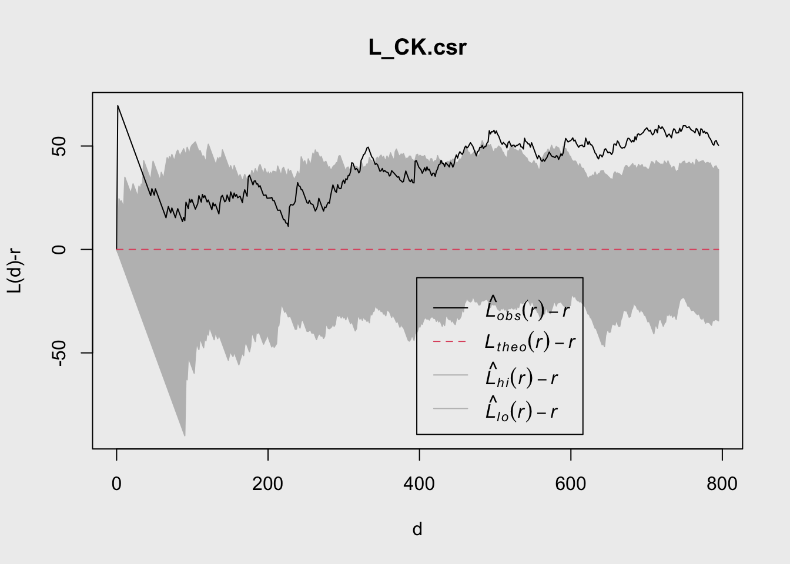
Result
- The observed L-function (L_obs(r) - r) shows a scale-dependent spatial pattern:
At short to medium distances (0-600r): The observed function remains within the 99.9% confidence envelope, consistent with random spatial distribution
At longer distances (600r+): The observed function significantly exceeds the upper confidence envelope boundary.
- Since the observed L-function significantly deviates from the confidence envelope at distances greater than 600 meters (p < 0.001), we reject the null hypothesis H₀.
- There is statistically significant evidence at the 0.001 level that childcare services in Choa Chu Kang do not follow a completely random spatial distribution. The pattern shows scale-dependent clustering: while individual facilities may be positioned relatively independently within neighborhoods, there is an underlying clustered structure when viewed across the broader Choa Chu Kang area.
9.2.1 Computing L-fucntion estimate
par(bg = "#EEEEEE")
L_TM = Lest(childcare_tm_ppp, correction = "Ripley")
plot(L_TM, . -r ~ r, ylab = "L(d)-r", xlab = "d(m)",
xlim = c(0, 1000))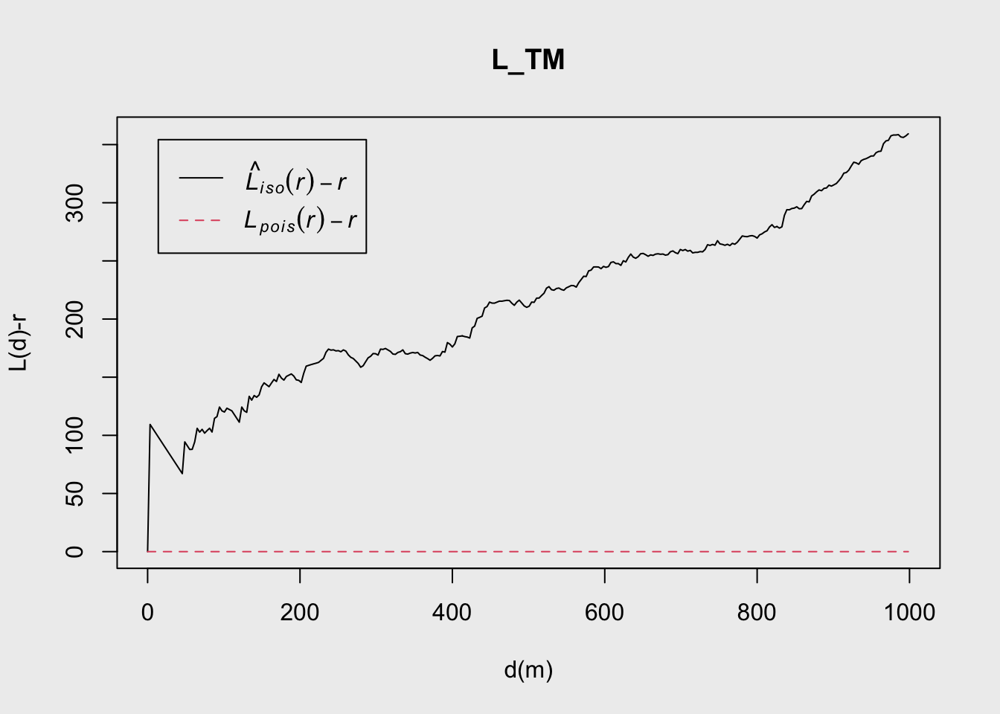
9.2.2 Performing Complete Spatial Randomness Test
To confirm the observed spatial patterns above, a hypothesis test will be conducted. The hypothesis and test are as follows:
H₀ = The distribution of childcare services at Tampines are randomly distributed. H₁ = The distribution of childcare services at Tampines are not randomly distributed. The null hypothesis will be rejected if p-value is smaller than alpha value of 0.001.
L_TM.csr <- envelope(childcare_tm_ppp, Lest, nsim = 99, rank = 1, glocal=TRUE)Generating 99 simulations of CSR ...
1, 2, 3, 4, 5, 6, 7, 8, 9, 10, 11, 12, 13, 14, 15, 16, 17, 18, 19, 20,
21, 22, 23, 24, 25, 26, 27, 28, 29, 30, 31, 32, 33, 34, 35, 36, 37, 38, 39, 40,
41, 42, 43, 44, 45, 46, 47, 48, 49, 50, 51, 52, 53, 54, 55, 56, 57, 58, 59, 60,
61, 62, 63, 64, 65, 66, 67, 68, 69, 70, 71, 72, 73, 74, 75, 76, 77, 78, 79, 80,
81, 82, 83, 84, 85, 86, 87, 88, 89, 90, 91, 92, 93, 94, 95, 96, 97, 98,
99.
Done.Let’s plot the model output:
par(bg = "#EEEEEE")
plot(L_TM.csr, . - r ~ r,
xlab="d", ylab="L(d)-r", xlim=c(0,500))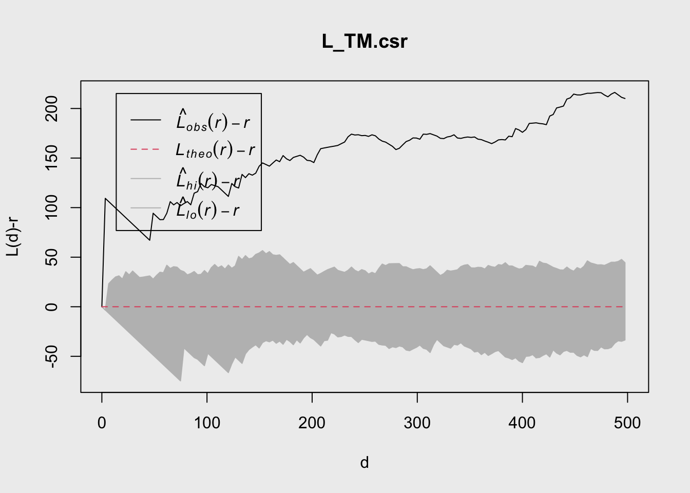
Result
The test provides strong statistical evidence (p < 0.001) against randomness in favor of clustered distribution. Therefore, we reject H₀ and accept H₁.
The distribution of childcare services in Tampines is not randomly distributed but shows significant spatial clustering.
Summary
| Function | Measures | Scale | Best for |
|---|---|---|---|
| G | Nearest neighbor distances | Local | Competition/inhibition |
| F | Empty space distances | Local | Coverage/accessibility |
| K | Point density at distances | Multi-scale | Overall clustering |
| L | Standardised K | Multi-scale | Clear visualisation |